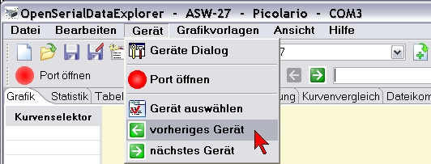
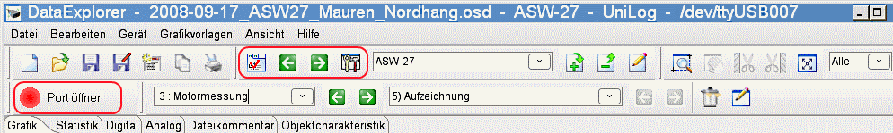

"Gerät" Menü

In diese Menü kann man gerätespezifische Aktionen auslösen
- "Geräte Dialog" öffnet den
Gerätedialog passend zum aktiven Gerät
- "Port öffnen/schließen" öffnet oder
schließt den seriellen Port, der für das Gerät
konfiguriert ist
- "Gerät auswählen" öffnet den
Geräteauswahldialog
- "vorheriges Gerät" schaltet, falls vorhanden,
auf das vorhergehende Gerät in der Geräteliste
- "nächstes Gerät" schaltet, falls vorhanden,
auf das nachfolgende Gerät in der Geräteliste
Die Geräte spezifischen Funktionen, die man häfig
benutzt, erreicht man ebenfalls über die Toolbar.

<<== zurück
weiter ==>>